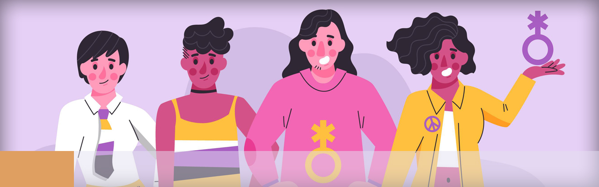

Presentación

Apreciables alumnos y alumnas:
Te damos la más cordial bienvenida. Nos congratulamos por tu empeño y estar en la Licenciatura de Trabajo Social.
La materia de género tiene por objetivo comprender los elementos generales de la teoría feminista y sus categorías de análisis teniendo la perspectiva de género como eje para el estudio de la realidad social contemporánea.
Como bien revisarás en este semestre desarrollarás temas centrados en:
- En la unidad 1 “Movimiento Feminista”, identificarán el proceso histórico del movimiento feminista a nivel mundial y nacional; así como la construcción teórica y científica de la teoría feminista.
- En la unidad 2 “Teoría feminista y género”, distinguirán los diversos enfoques de la teoría feminista, desde una perspectiva crítica.
- En la unidad 3 “Las categorías de la teoría feminista”, identificarán las categorías de análisis de la teoría feminista.
- En la unidad 4 “Género y cultura” Identificarán la relación del proceso de socialización de género con las instituciones sociales y la cultura en el orden patriarcal.
- En la unidad 5 “Investigación y metodología con perspectiva de género” distinguirán y aplique la metodología de investigación con perspectiva de género.
Durante este tiempo por delante, a lo que te comprometes será a participar de manera activa y comprometida para enviar todas tus actividades programadas por cada unidad, para lo cual, te estaré acompañado para resolver tus dudas académicas y situaciones que pudieran retrasar el estudio del presente curso.
Te recomiendo tener un análisis global de la asignatura en la plataforma, para poder proyectar una planeación por unidad que te permita, cumplir con los tiempos, pero sobre todo la realización de los entregables de acuerdo a las indicaciones solicitadas.
Para cualquier duda te pido, me la hagas saber por “mensaje” o en el “foro dudas”, ya que es el espacio donde todos los participantes pueden formular, visualizar y en su caso participar en la solución de contratiempos que en lo individual surjan en nuestro grupo.
Recuerda revisar todos los contenidos de cada unidad, los mismos te permitirán poder resolver cada una de las actividades, evidencias de aprendizaje.
¡Que tengas un excelente inicio de curso!
Mtra. Claudia Barrera Núñez
Profesora ENTS-UNAM